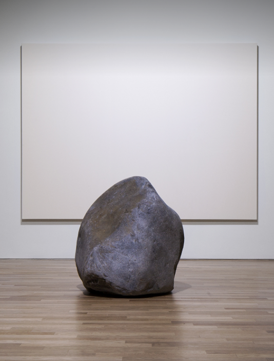
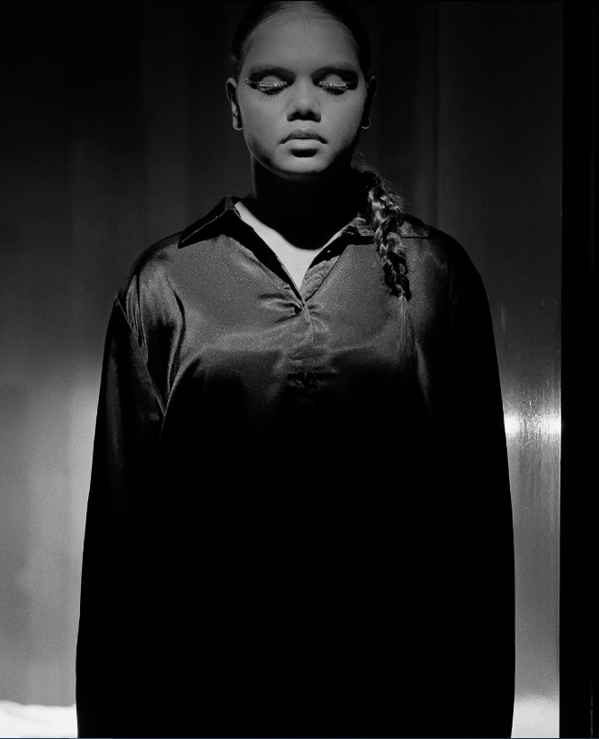
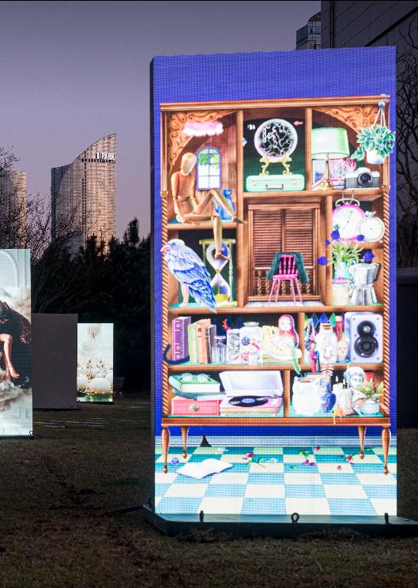
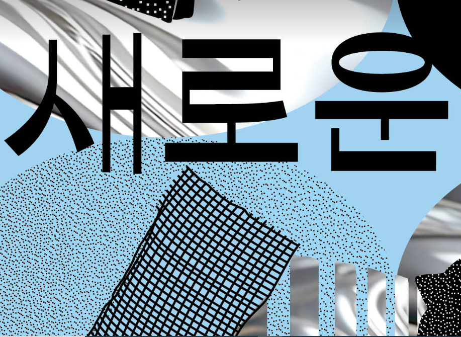
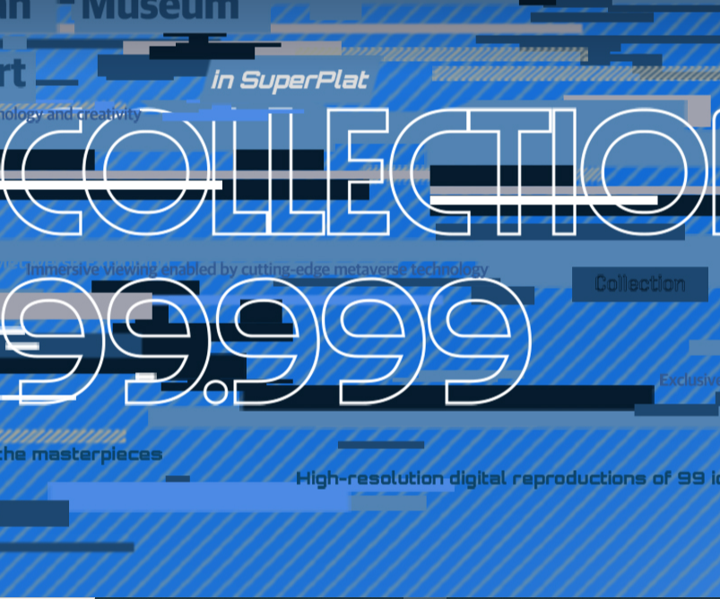
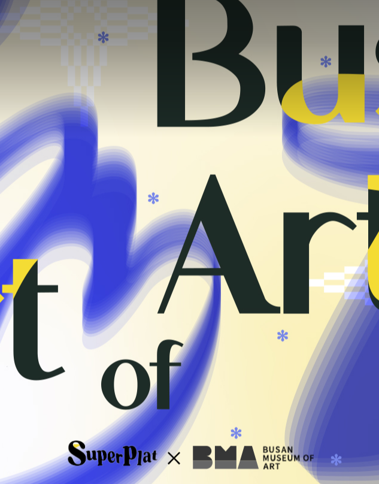
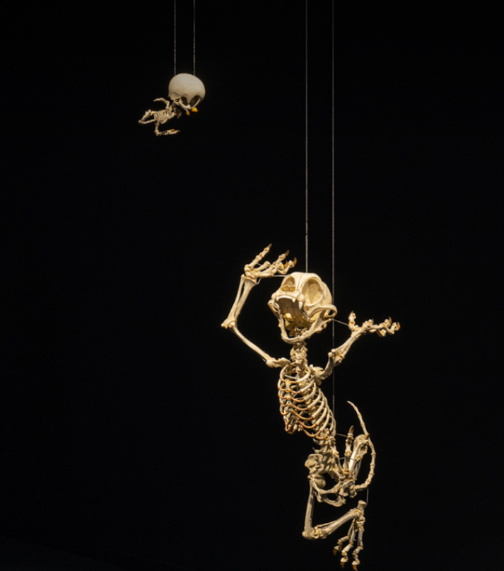
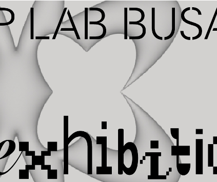

균형과 직관,그 사이에서 당신의 감각을 깨우는 공간 부산 시립미술관
- 예술은 순간을 머무르게 한다.
- 감상은 해석이 되고, 해석은 나만의 예술이 된다.
- 아이의 감각으로 세상을 다시 본다.
Three directions pursued
일상과 예술의 경계를 허무는 공간,
부산시립미술관은 모두에게 열린 예술 경험을 지향합니다.
-
예술 교육
자유로운 아이디어로
새로운 경험을 만듭니다. -
창의적 감상
예술은 느끼는 만큼,
해석하는 만큼 당신의 것입니다. -
감각
예술은 놀이처럼 시작됩니다
스스로 느끼고 표현하며 창의력을 키웁니다.
BMA Exhibition
스페셜 작품들을 한눈에
부산시립미술관에서 열리고 있는 전시들을 만나보세요.
-
이우환 공간 상설전시
2023-01-01 – 2099-12-31
-
무빙 온 아시아
2025-04-15 – 2025-06-29
-
디지털 서브컬처
2025-04-15 – 2025-06-29
-
젊은 시각 새로운 시선 2025
2025-04-10 – 2025-07-06
-
콜렉션 99.999
2024-12-24 – 2025-12-31
-
부산미술, 그 시작
2024-12-24 – 2025-12-31
-
한국현대미술작가조명 IV - 이형구
2022-03-29 – 2022-08-07
-
Loop Lab Busan
2025-04-15 – 2025-06-29
BMA PROGRAM
누구나 예술을 즐길 수 있도록
다양한 프로그램을 준비했습니다.
BMA를 움직이는 사람들
예술을 더 가까이, 더 깊이 전달하기 위한 고민
전시는 혼자 만들어지지 않습니다.
기획부터 운영까지, 모든 과정에
부산시립미술관 팀의 열정이 담겨 있습니다.
이곳은 예술을 위한, 예술 뒤의 이야기입니다.